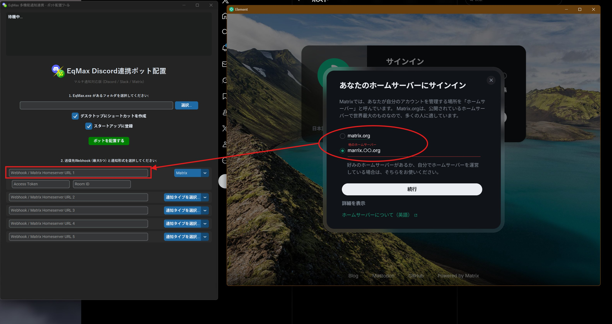
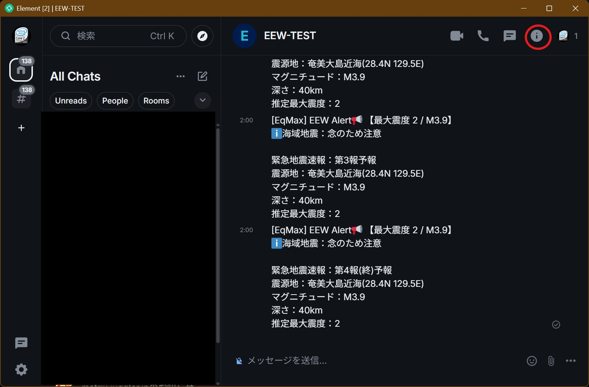
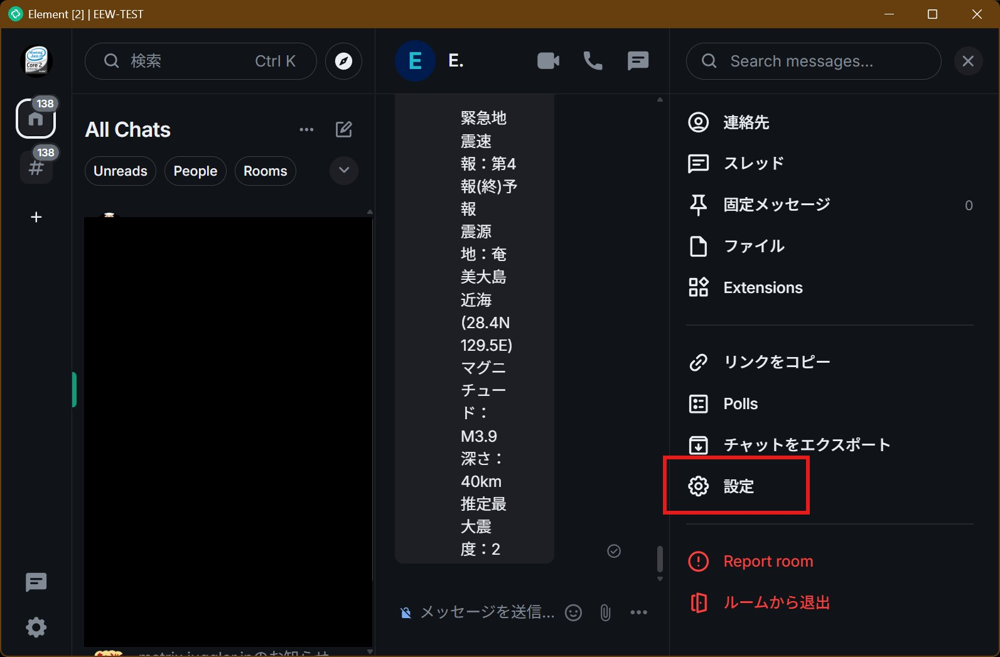
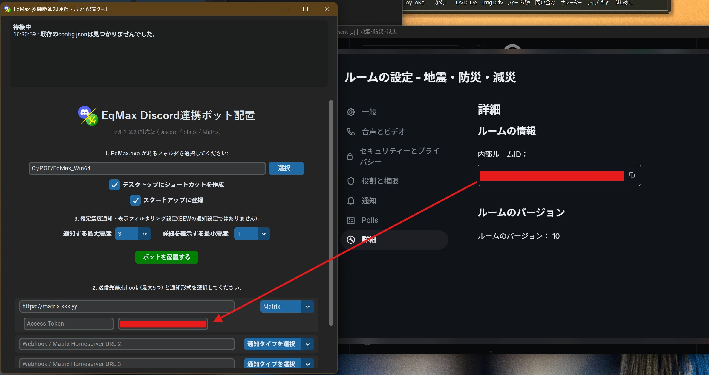
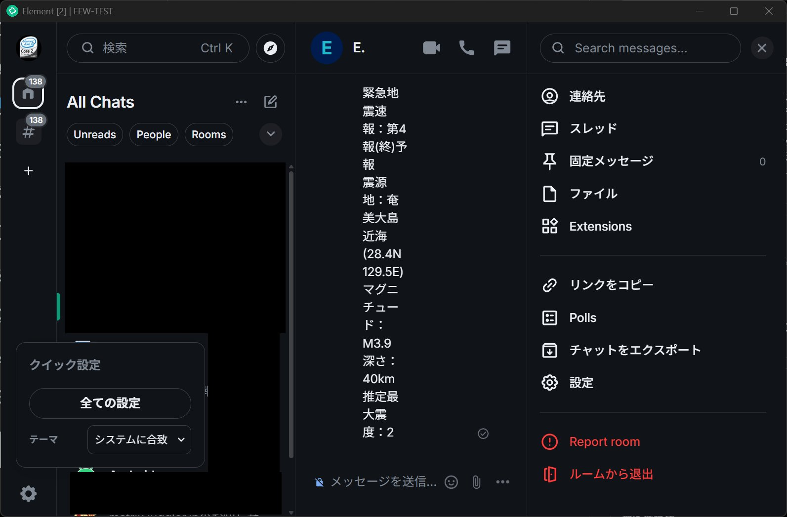
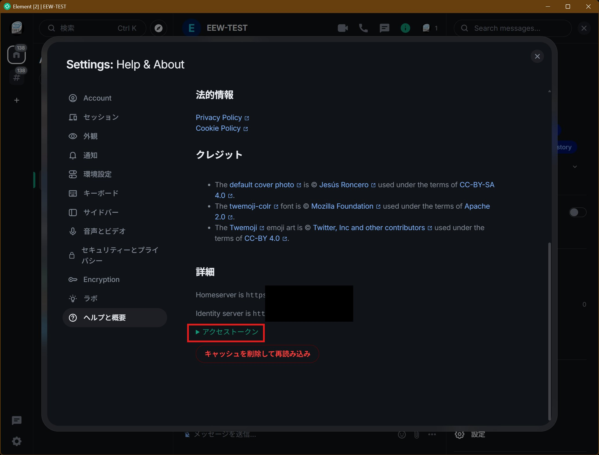
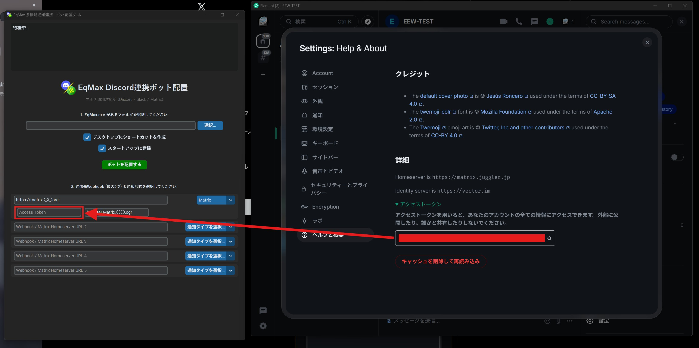

Matrix連携設定
総合ハブの Discord連携設定 (➃の部分)を実行してください。

Discord連携でMatrixへ接続する

- EqMax.exeの選択: ファイルを選択します。
- 選択タイプからMatrixを選ぶ: これによりMatrix専用設定項目が表示されます。
Matrixの設定手順
ホームサーバーURLの取得

- ログイン時に使うアドレスをコピーします。
- Discord連携側の「ホームサーバーURL」欄に貼り付けます。
ルームIDの取得



- 右上のギアマークから設定を開きます。
- 「詳細」タブ内のルームIDをコピーします。
- Discord連携側の「Room ID」欄に貼り付けます。
アクセストークンの取得



- 左下のギアマークから「すべて設定」を開きます。
- 「ヘルプ」＞「アクセストークン」の順に進み、Tokenをコピーします。
- Discord連携側の「Access Token」欄に貼り付けます。
※警告: このトークンは他人に教えないでください。公開すると乗っ取られるリスクがあります。
Discord連携を起動する
起動方法

Discord起動用ショートカットは二種類あります。
- 通常起動用ショートカット: 最小化起動し、スタートアップにも登録されます。
- セーフモード起動用: 起動しない場合のトラブルシューティング用です。一度正常に起動できれば、次回からは通常起動が可能です。
※初回はセキュリティ警告を許可する必要があります。
bot実行時プロンプトの見方

最小化中のウィンドウを展開すると表示されるログ画面の見方です。
- 赤枠（起動）: プロセスの状態を表示します。
- 黄枠（監視/Eq_Guardian）: フリーズ検知・自動再起動・メモリリーク監視(1GB制限)・定期生存報告を行います。
- 水枠（EEW連携）: 緊急地震速報の送信ログと、各連携先への成功結果を表示します。